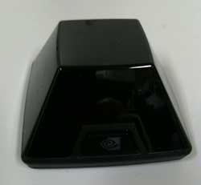
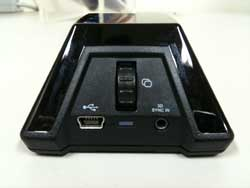
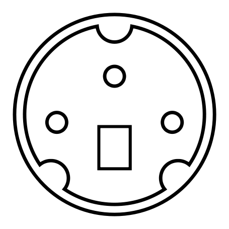
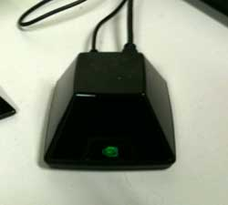
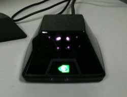

NV3DVisionCable
NVIDIA 3D vision用ケーブルの自作¶
NVIDIA 3D visionを用いてOpenGL quadbuffer modeで立体視するには Quadro FXシリーズのビデオカードが必要ですが，実はそれだけではだめで， ビデオカードと3D visionのemitterをつなぐ特殊なケーブルが必要になってきます． 同期信号をこのケーブル経由で送っているようです． （ただし，WindowsだとUSBからも信号が送れる様でもある．要確認）
このケーブルは，US版ではグラフィクスカードに同梱されているらしいですが，ヨーロッパとアジアで売られているものにはなぜか同梱されていないらしい． http://www.nvidia.co.jp/object/quadro_pro_graphics_boards_linux_jp.html
そこで，ビデオカードと3D visionのemitterをつなぐケーブルを自作してみました．
3D vision側の接続部¶
下写真左は正面から，右は裏から見たもの． 写真のように，オーディオのステレオジャックになっていますが， これが若干曲者で，良く使われている3.5mmではなく，それより一回り小さい，2.5mmのものになります． あと，隣にUSB端子がありますが，Linuxではこれは給電にしか使われてないようです（Windowsでは同期信号受信にも使われているっぽい？）．
 
ビデオカード側の接続部¶
ビデオカード側も，あまり見かけない3-pin mini DINという形状のコネクターになっています． こちらは3Dメガネ用のコネクターのVESAの規格になっているのか，昔のSGIのころからのものと形状は同じです． http://en.wikipedia.org/wiki/VESA_Stereo
コネクターの入手¶
このように，ビデオカード側も3D vision側もあまり見かけない形状のコネクターですが， 今回は以下の店で購入しました．
- 3-pin mini DIN
- マルツパーツ館秋葉原店 http://www.marutsu.co.jp/akihabara/ 178円
- 2.5mm ステレオマイクロジャック(ケーブルつき)
- 千石電商2号店 http://www.sengoku.co.jp/ 250円
{kind=link}
{kind=link}
コネクター間の接続¶
コネクター間の接続は，以下のようにつなげばOKのようです．

ピン側から見て左から，A, B, Cとする．
- A ⇔ 真ん中 (Ring; 赤)
- B ⇔ 先端 (Tip; 白)
- C ⇔ 根元 (Sleeve; シールド線)
ケーブルの色は買ったものがたまたまそうなっていただけなので， モノによって違っている可能性があります．
完成¶
一応こんな感じになりました．
{kind=link}
接続¶
今回は，Quadro FX3700に接続しました．
X serverの方の設定などを終えた後で接続し， 電源を取るためにUSBの方もケーブル（これは付属）で接続します． 接続後，X serverを再起動します． ちゃんと認識されると，以下のように暗い緑色に光ります． （Windowsの場合は再起動は必要ない）

次に3Dを使うアプリ(cuemol2やcootとか)を起動し，stereoを有効にすると 以下のように明るい緑に光ればOKです．

肉眼では見えないですが，デジカメなどから見ると，上のように赤外線LEDが光っているのが見えます．
免責事項¶
このページの情報に基づいて作成したものを用いて，故障など損害を被った場合， 著者はなんら責任を負いません． また，動作を保証するものでもありません． 各自の責任において参考にしてください．